弊社サイト（h-s-e.jp）で運用している、SEO記事を継続的に制作・公開する仕組みの概要と、必要な工数をまとめた資料です。
テーマの指示と最終チェックのみ
決まった時刻に自動で制作・公開（頻度は任意に設定可能）
キーワード選定・執筆・図解とサムネイル作成・公開・公開後の確認
| 工程 | 担当 | 内容 |
|---|---|---|
| 狙うテーマ・優先順位の決定 | 担当者 | どの分野の記事を優先するかを指示する |
| キーワード選定 | AI | 検索語の調査と、記事ごとに狙う語の設計表を作成する |
| 構成・執筆 | AI | 設計表と公開済み記事を踏まえて、重複しない構成で執筆する |
| 図解・サムネイル作成 | AI | 1記事につき図解2枚とサムネイル1枚を、決まった型で作成する |
| 表示確認・公開 | AI | スマートフォン幅で表示崩れがないか確認し、サイトに公開する |
| 公開後の確認・記録 | AI | ページの表示・一覧やサイトマップへの掲載を確認し、作業記録を残す |
| 最終チェック・検索エンジンへの登録申請 | 担当者 | 公開された記事を確認し、検索結果の数値を見て次の方針を決める |
分野と優先順位を伝える（都度ではなく方針として）
設計表から未着手の語を選び、既存記事と重複しない構成を作る
4,000字以上を目安に執筆。関連する既存記事へのリンクも入れる
文字だけの記事にしないよう、図解2枚とサムネイルを作成
スマートフォン幅で表のはみ出しや崩れがないか確認
サイトに公開。時間内に完成しなかった記事は公開しない
表示・画像・一覧掲載を確認し、つまずいた点を記録して次回に反映
公開記事の確認と検索エンジンへの登録申請
| 工程 | 一般的な制作体制（外注・社内制作） | このスキーム |
|---|---|---|
| キーワード選定 | SEO担当者が調査・選定 | AI |
| 構成・執筆 | ライターが執筆し、編集者が確認・修正 | AI |
| 図解・サムネイル | デザイナーが制作 | AI |
| 入稿・公開 | 担当者がCMSに入稿し、表示を確認 | AI |
| 進行管理 | 複数の担当者間で、依頼・修正・確認のやり取りが発生 | 不要（1つの流れで完結） |
| 指示・最終チェック | 担当者 | 担当者1名 |
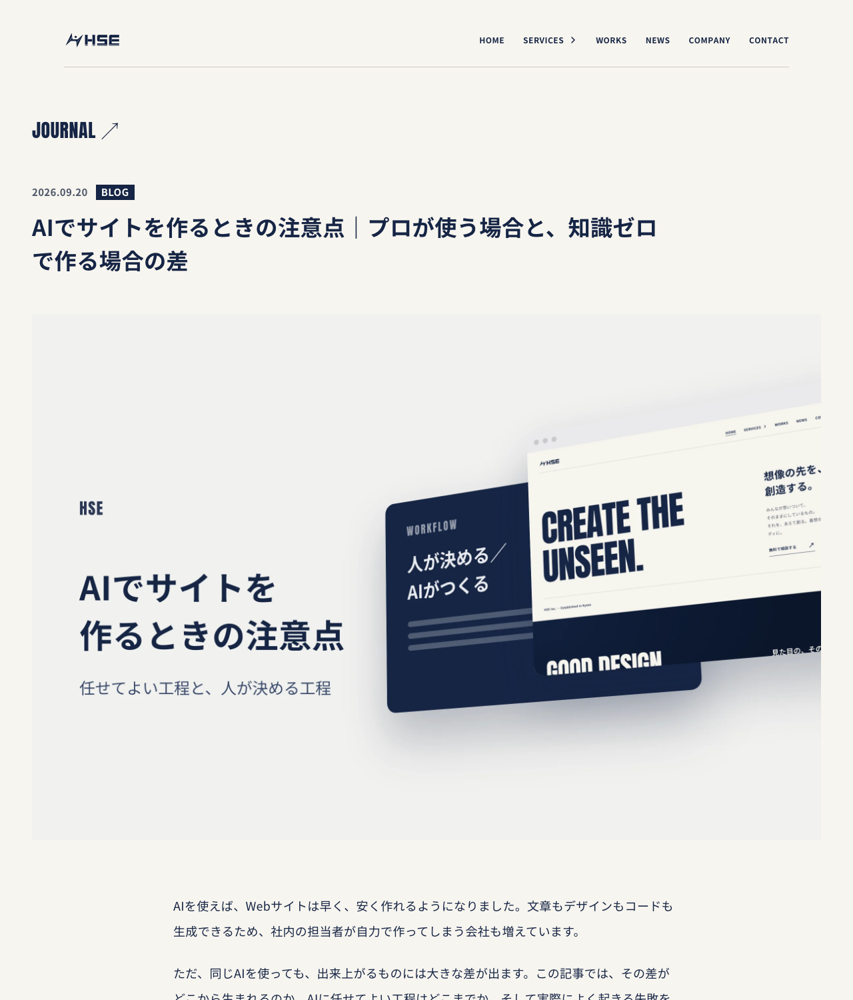
公開中の記事（「AIでサイトを作るときの注意点」）。本文・図解・サムネイルまでAIが制作
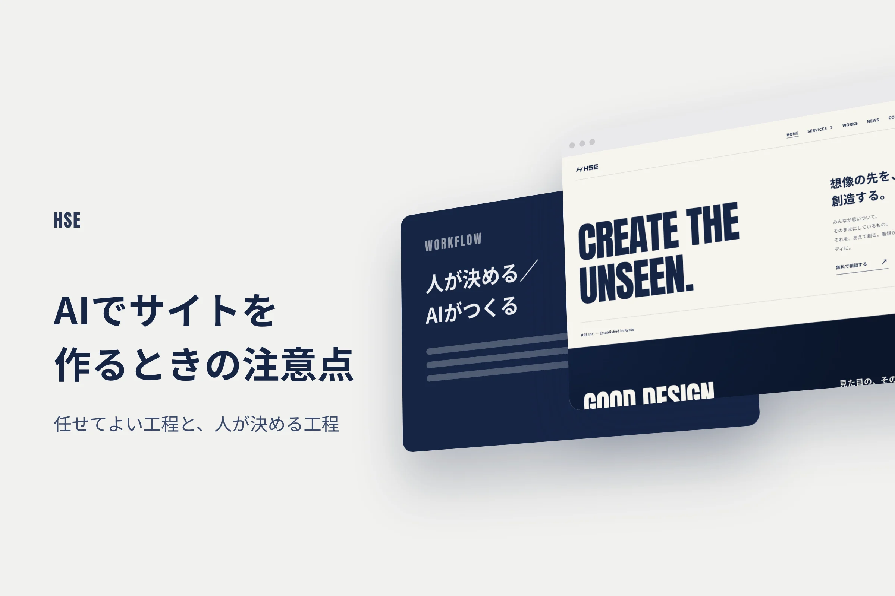
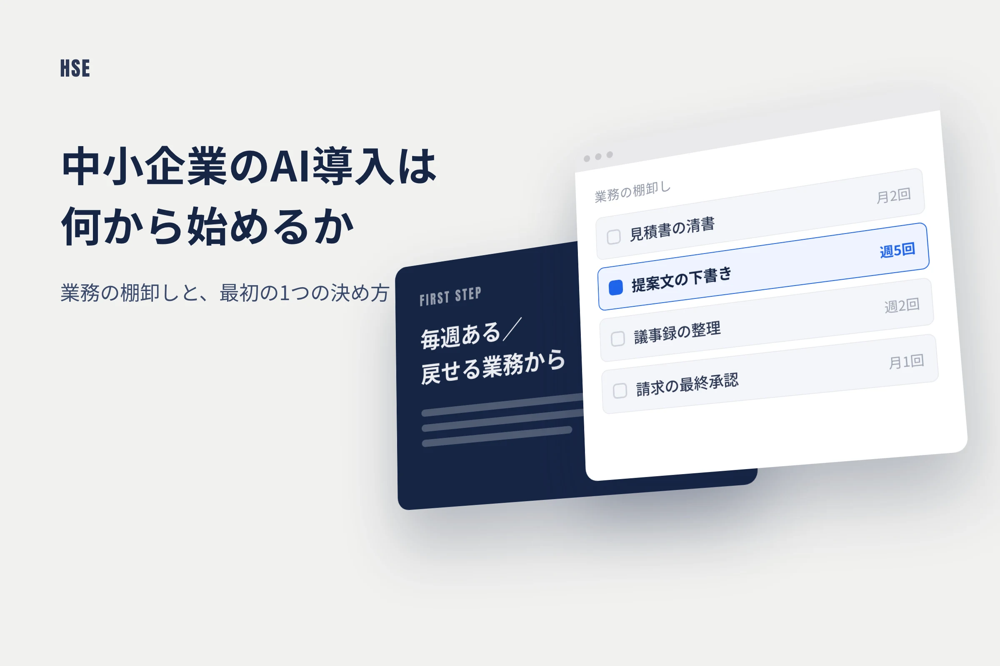
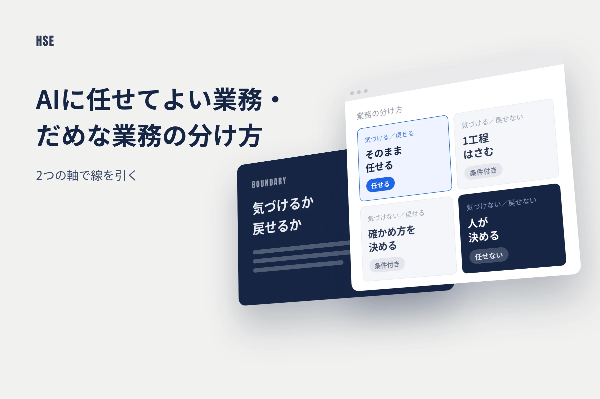
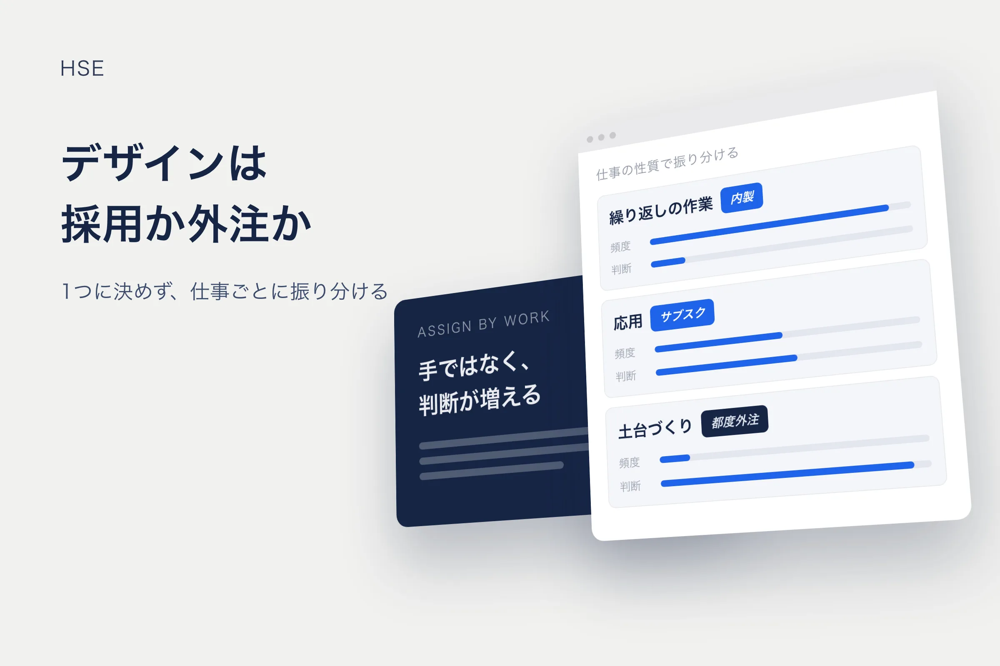
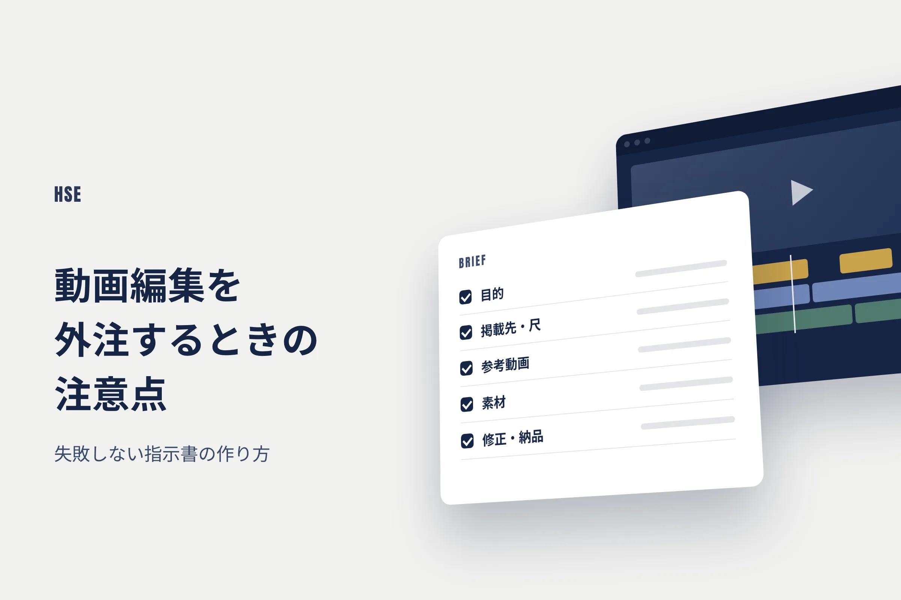
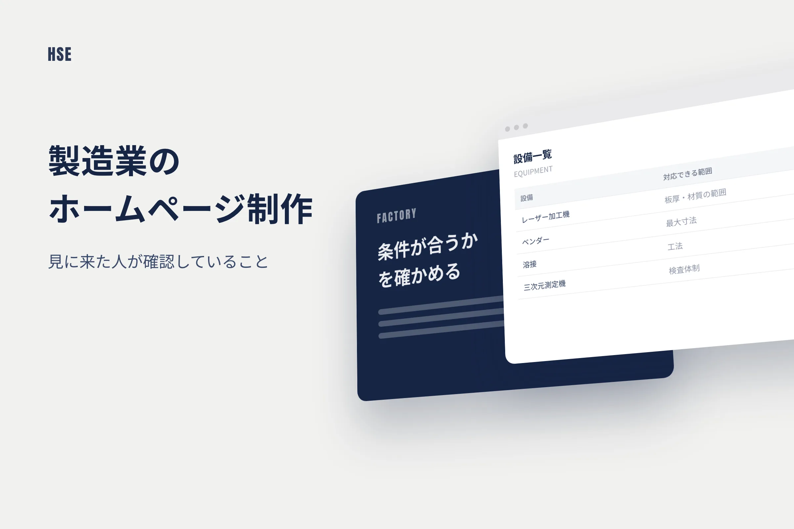
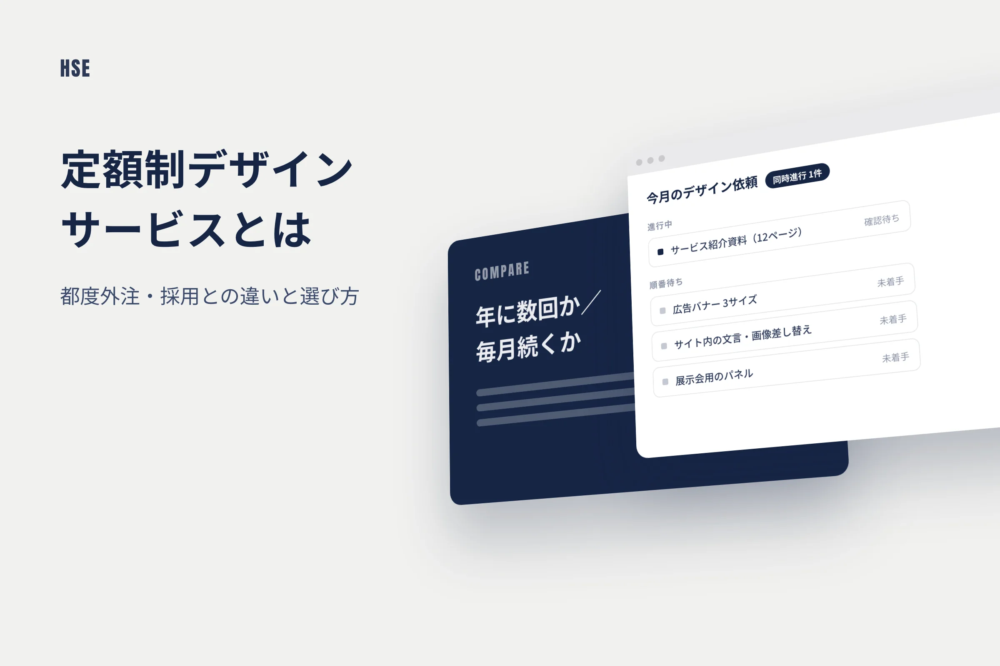
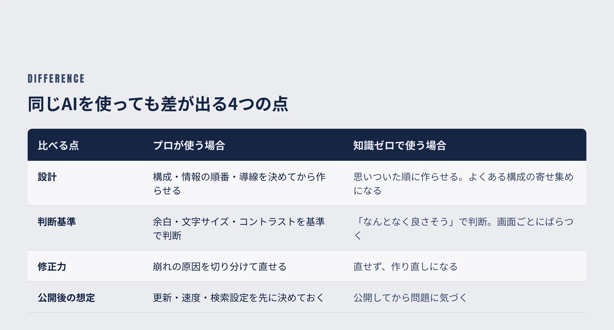
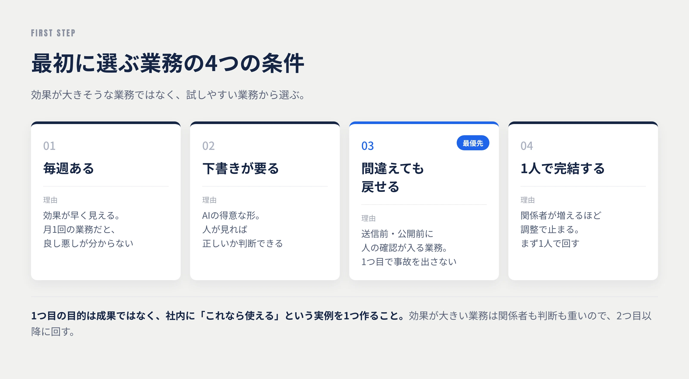
文字数の目安、煽り表現の禁止（「〜選」「プロが解説」など）、根拠のない金額を書かない、記事末尾の構成などを文書で固定し、毎回それに沿って制作します。
執筆前に公開済み記事の見出しを確認し、1ページで1つのキーワードを狙うようにして、記事同士が検索で競合しないようにしています。
スマートフォン幅で実際に表示し、表のはみ出しや図解の崩れを確認してから公開します。公開後もページと画像が正しく表示されるかを確認します。
記事ごとに、狙った語・構成・リンク先・つまずいた点を記録します。次の記事はこの記録を読んでから作るため、回数を重ねるほど品質が安定します。
サイトリニューアル直後から開始
開始から約3週間
図解2枚＋サムネイル付き
担当者1名
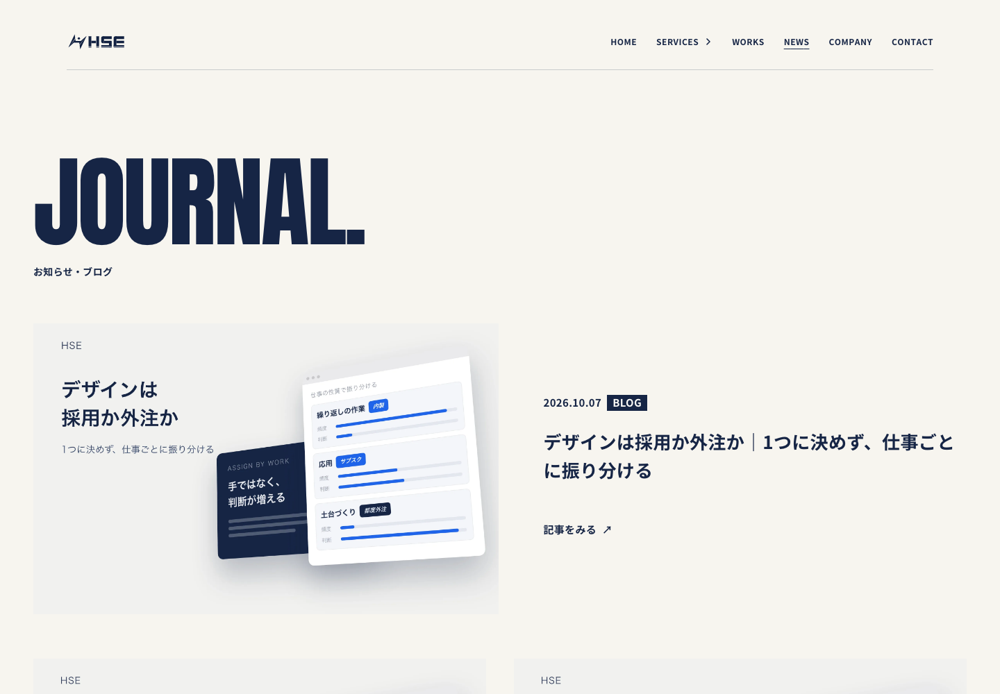
記事一覧ページ（h-s-e.jp/news）
サイトの作り（CMS・静的サイトなど）に合わせて、公開の手順を組み込みます。
どの分野の検索語を狙うか、書いてよい内容・避ける内容を最初に決めます。
テーマの指示と、公開記事の最終チェックを行う方が1名いれば運用できます。
更新頻度（毎日・週数本など）や、公開前に担当者の確認を挟むかどうかは、サイトごとに設定できます。